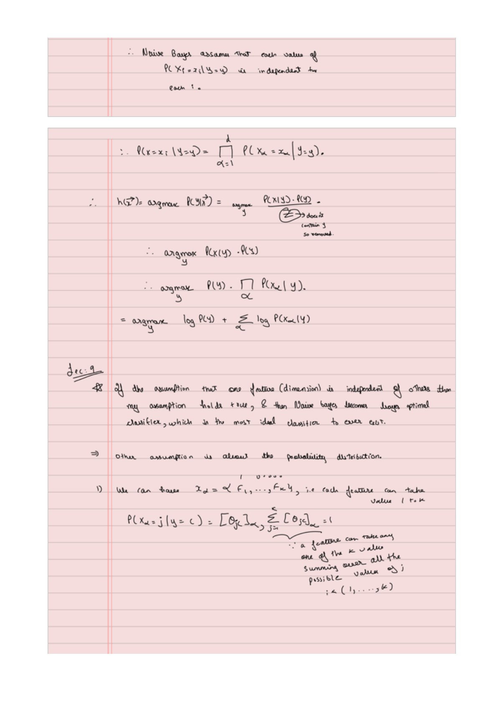

Naïve Bayes: From Word Counts to a Prediction
Expanded from Naïve bayes.pdf · View a handwritten page
Suppose a message says “free prize.” How could we decide whether it is spam using only a few labeled examples? The handwritten notes build the answer from Bayes' rule, conditional independence, and counts. We will follow that route with every training message visible.
Keep the entire training set on the page
| Message | Label | Text |
|---|---|---|
| S1 | Spam | free free prize |
| S2 | Spam | free prize |
| H1 | Ham | meeting meeting |
| H2 | Ham | free meeting |
“Ham” means an ordinary, non-spam message. Two of four training messages are spam, so the estimated class prior is $P(S)=1/2$. The ham prior is also $1/2$. These are probabilities of labels before reading the new message.
Start with Bayes' rule
For a new message $x$ and a candidate class $c$, Bayes' rule says:
The posterior is the class probability after seeing the message. The numerator combines how likely that message is within the class with how common the class is. The denominator $P(x)$ is the overall probability of the message, allowing for any class.
Expand the denominator
In our model, every message is either spam ($S$) or ham ($H$). The probability of seeing $x$ together with spam is $P(x\mid S)P(S)$; for ham it is $P(x\mid H)P(H)$. These possibilities do not overlap and cover both classes, so we add them:
For any number of classes, do the same sum over all class labels $k$. This is the law of total probability:
Substitute this expression for $P(x)$ in Bayes' rule:
The denominator totals the weights for all classes, making the posterior probabilities sum to one. It is the same for every candidate class, so we can compare numerators to choose a label and divide by their sum when we want probabilities.
What is the “naïve” assumption?
For separate input features, Naïve Bayes assumes they are independent conditional on the class:
Knowing the class is the key condition. The model does not require features to be independent across all messages. It says that, within a given class, we can combine simple feature distributions instead of estimating a probability for every possible feature combination.
For example, with 20 binary features there are over a million possible combinations. Estimating a separate probability for each is difficult with a small dataset. A factorized model has far fewer parameters. The cost is that correlated evidence can be counted repeatedly.
For text, count occurrences of each word
Multinomial Naïve Bayes represents a message by word counts. “free free prize” becomes $(2,1,0)$. The order of the words is discarded, while repeated occurrences still count. Add the counts within each class:
| Class | free | prize | meeting | Total tokens |
|---|---|---|---|---|
| Spam | 3 | 2 | 0 | 5 |
| Ham | 1 | 0 | 3 | 4 |
Without smoothing, the spam word probabilities are 3/5, 2/5, and 0/5. The ham word probabilities are 1/4, 0/4, and 3/4. A previously unseen word within a class gets zero probability and would zero out the entire product.
The multinomial event model treats word-token draws as independent given the class and message length. Counts themselves sum to that length, so it is more precise to describe independent token draws than independent count coordinates. For word probabilities $\theta_{cj}$, its likelihood is:
The factorial factor counts how many word orders give the same counts. For a fixed message it is identical across classes and cancels from the class comparison. Here we condition on length and do not add a separate class-dependent length model.
Give unseen words some room
Laplace smoothing adds one to every word count. Because our vocabulary has three words, it adds three to each class's token total:
| Class | free | prize | meeting |
|---|---|---|---|
| Spam | 4/8 | 3/8 | 1/8 |
| Ham | 2/7 | 1/7 | 4/7 |
Each row sums to one. More generally, add $\alpha$ per word and use $N_c+\alpha V$ in the denominator. A symmetric Dirichlet prior with parameter $\alpha$ gives this expression as a posterior mean for the word-probability vector. For a MAP interpretation, the corresponding interior-mode prior parameters are $\alpha+1$. This is the same distinction between posterior means and modes that appeared in the coin example.
Classify “free prize” by hand
The new message has count vector $(1,1,0)$. Multiply the class prior by the two relevant word probabilities:
Ham score = 1/2 × 2/7 × 1/7 = 1/49 ≈ 0.02041.
The spam score is larger. To get the model's spam probability, divide its score by the sum of both scores:
Under this tiny fitted model, “free prize” has about an 82% spam probability. The phrase “under this model” matters: four training messages are enough to follow the arithmetic, but do not establish that an 82% score will be well calibrated on real email.
Why is there no meeting probability in that product?
The meeting count is zero, so its contribution is $\theta_{\mathrm{meeting}}^0=1$. A Bernoulli model would explicitly model absence; a multinomial model uses occurrence counts.
Use logarithms for longer messages
A long product of small probabilities can become too small for a computer to represent. Taking logs turns it into a sum:
Choose the class with the largest score. For stable probabilities, subtract the largest score before exponentiating and normalizing.
from math import exp, log
counts = [1, 1, 0] # free prize
word_prob = [[4/8, 3/8, 1/8], [2/7, 1/7, 4/7]]
scores = [
log(0.5) + sum(n * log(p) for n, p in zip(counts, row))
for row in word_prob
]
weights = [exp(s - max(scores)) for s in scores]
print(weights[0] / sum(weights)) # 0.821229...Match the input model to the data
| Variant | What one input represents | What to estimate |
|---|---|---|
| Categorical | A category, such as device type | Category probabilities within each class |
| Bernoulli | A yes/no feature, such as whether “free” appears | Presence and absence probabilities within each class |
| Multinomial | Occurrence counts | A word-probability vector within each class |
| Gaussian | A continuous measurement | Each feature's mean and variance within each class |
A categorical likelihood uses the probability of the observed category. A Bernoulli likelihood uses $p$ for presence and $1-p$ for absence. Neither should silently reuse the multinomial token denominator.
A continuous example: Gaussian Naïve Bayes
Suppose we instead observe message lengths. Use these separate teaching measurements:
| Class | Lengths | Mean | Variance |
|---|---|---|---|
| Spam | 10, 14 | 12 | 4 |
| Ham | 4, 8 | 6 | 4 |
A length of 10 is two units below the spam mean and four units above the ham mean. The Gaussian densities are about 0.12099 and 0.02700. With equal class priors, normalization gives a spam probability of about 0.8176.
For several continuous features, Gaussian Naïve Bayes multiplies their class-conditional densities. It estimates a separate mean and variance for each feature in each class. A zero estimated variance needs smoothing to keep the density usable. Strong within-class dependence or a poor Gaussian fit can weaken the model.
Why Naïve Bayes can give a linear classifier
For our two-class multinomial model, subtract the ham log score from the spam log score:
This is an intercept plus a weighted sum of counts. Each weight is a log probability ratio. A positive weight means an occurrence moves the score toward spam. Equal posterior probabilities form a linear boundary in count space, even though we estimated the weights from generative counts.
For Gaussian Naïve Bayes, unequal class variances generally introduce squared-input terms. If each feature's variance is shared across classes, those quadratic terms cancel and the log odds become linear. Our length example has equal variances: its log odds are $1.5x-13.5$, giving a boundary at length 9.
Logistic regression will use a linear log-odds rule too, but fit its coefficients directly from labeled observations. The perceptron also learns a linear boundary; its update rule does not, by itself, provide this probability model.
From the handwritten notes
This guide expands Naïve bayes.pdf with worked tables and intermediate steps. The PDF contains all the original pages.
View original page 3


Further reading: